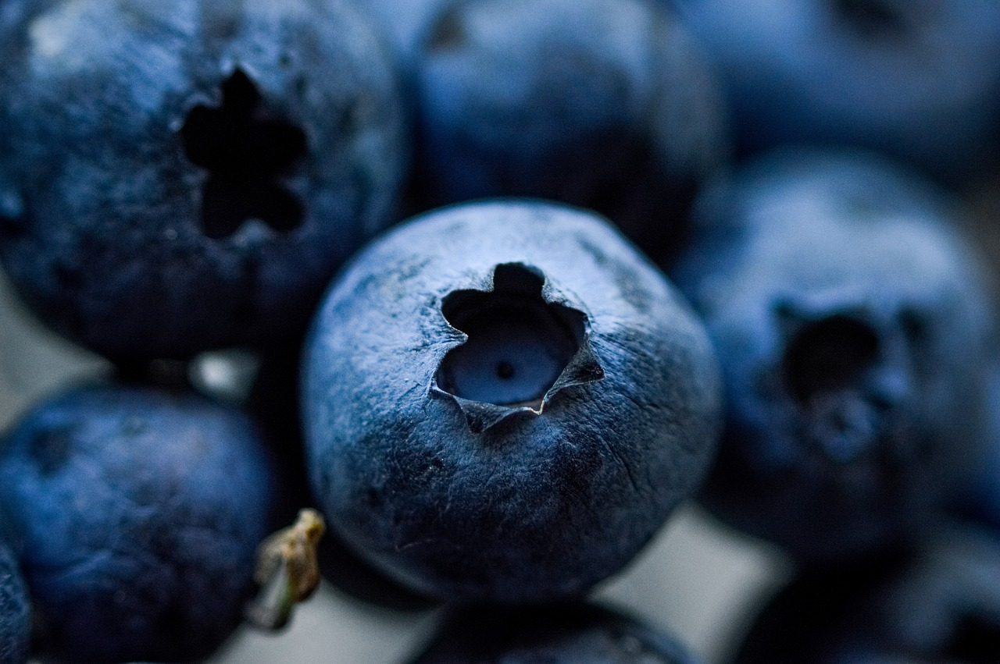
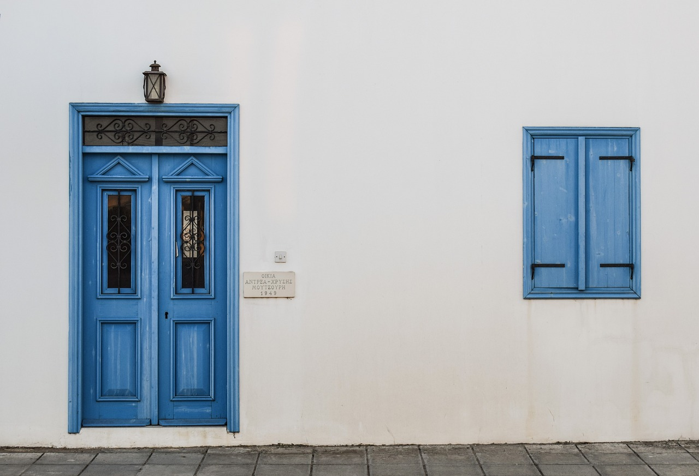
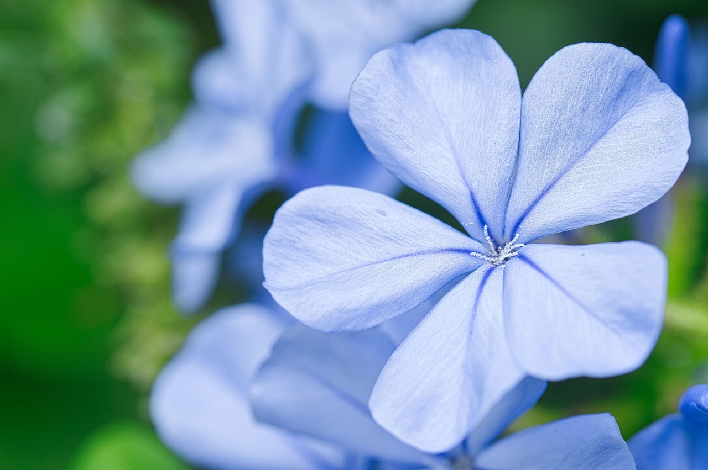
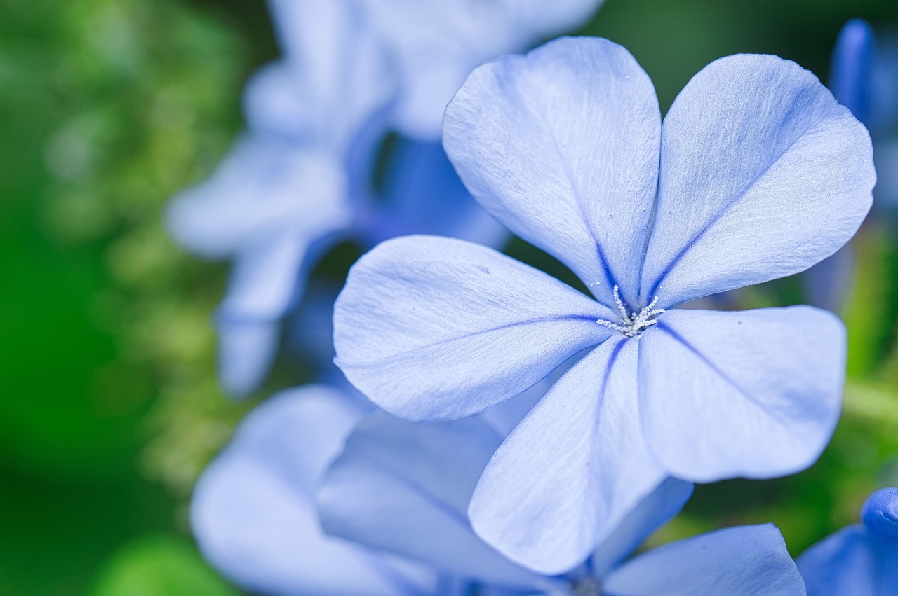
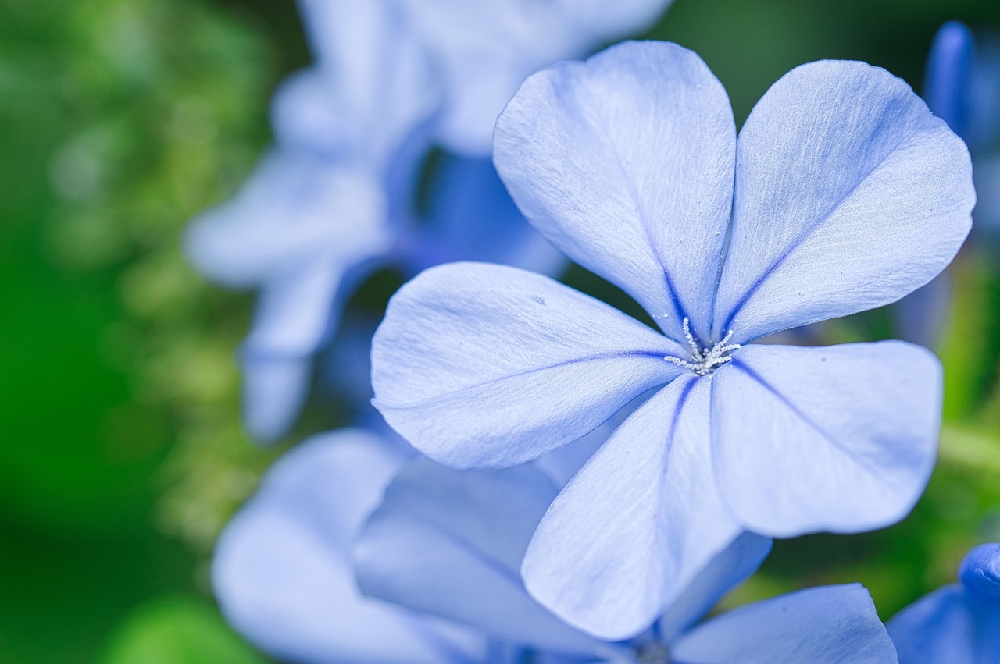

What is Blue?
Blue is one of the primary colors in traditional color theory. Since ancient times, blue has been prominent in art, decoration, and fashion. Blue is often associated with harmony, masculinity, confidence, calmness, and sadness. The color blue can be found in many areas of nature, such as the sky, the ocean, morpho butterflies, and morning glory flowers.


 



Fun Facts:
- In ancient times, woad and indigo plants were used to create blue dye.
- The phrase blue blood refers to someone who is associated with nobility or the upper class.
- There is a shade of blue called Twin Bed due to it's HEX color code spelling bed twice.